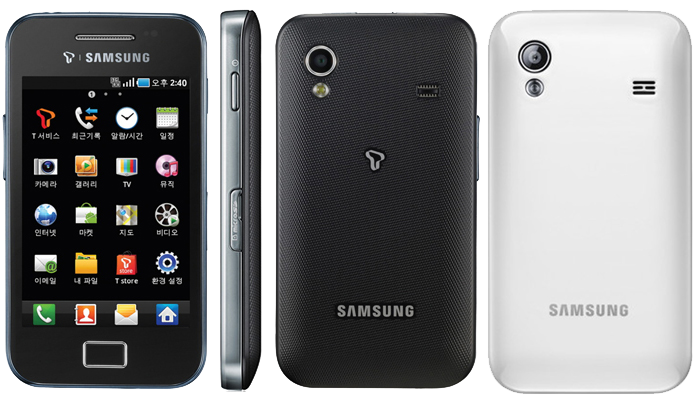

삼성 갤럭시 에이스
1. 외관

삼성전자가 2011년 2월, MWC 2011에서 공개한 안드로이드 스마트폰.
2. 사양
| 프로세서 | 퀄컴 스냅드래곤 S1 MSM7227-1 SoC. ARM11 800 MHz CPU, 퀄컴 Adreno 200 GPU | ||
| 메모리 | 384 MB LPDDR1 SDRAM, 512 MB 내장 메모리, micro SDHC (최대 32 GB 지원) | ||
| 디스플레이 |
3.5인치 HVGA(480 x 320) RGB 서브픽셀 방식의 TFT-LCD 멀티터치 지원 정전식 터치 스크린 |
||
| 네트워크 | 기본 | HSDPA & HSUPA & UMTS |
GSM & EDGE Wi-Fi 802.11a/b/g/n, 블루투스 3.0 |
| CM | TD-SCDMA | ||
| 카메라 | 후면 500만 화소 AF 및 LED 플래시 | ||
| 배터리 | Li-Ion 1350 mAh / 1500 mAh | ||
| 운영체제 | 안드로이드 2.2 (Froyo) → 2.3 (Gingerbread) | ||
| 규격 | 59.9 x 122.4 x 11.5 mm, 114 g | ||
3. 상세
한국에는 2011년 2월에 SK텔레콤을 통해 출시되었다. 개발 코드네임은 Cooper.
MWC 2011에서 공개되었을 때, 같이 공개된 다른 모델 중에서 갤럭시 S와 유사한 디자인의 소형 기기라 눈길을 끌었다.
하지만 결과적으로 보면, 갤럭시 S의 대부분의 장점을 깎아먹은 모델이다. 가성비도 모토글램 등과 비교해서 떨어진다.
갤럭시 A의 갤럭시 시리즈 보급기 포지션을 이어받았지만 오히려 갤럭시 A보다 상당히 퇴화한 사양이다. 저쪽은 아직도 나름대로 현역 사양을 가지지만, 이쪽은 철저한 저사양이기 때문이다.